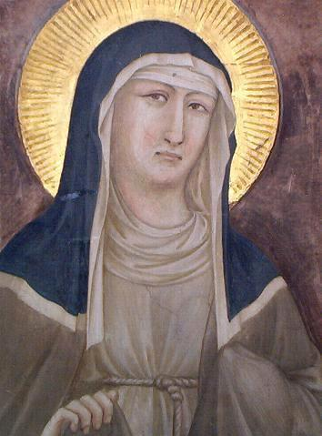
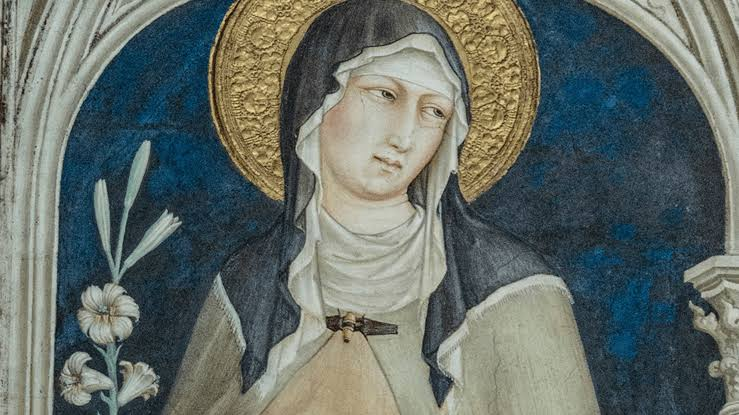
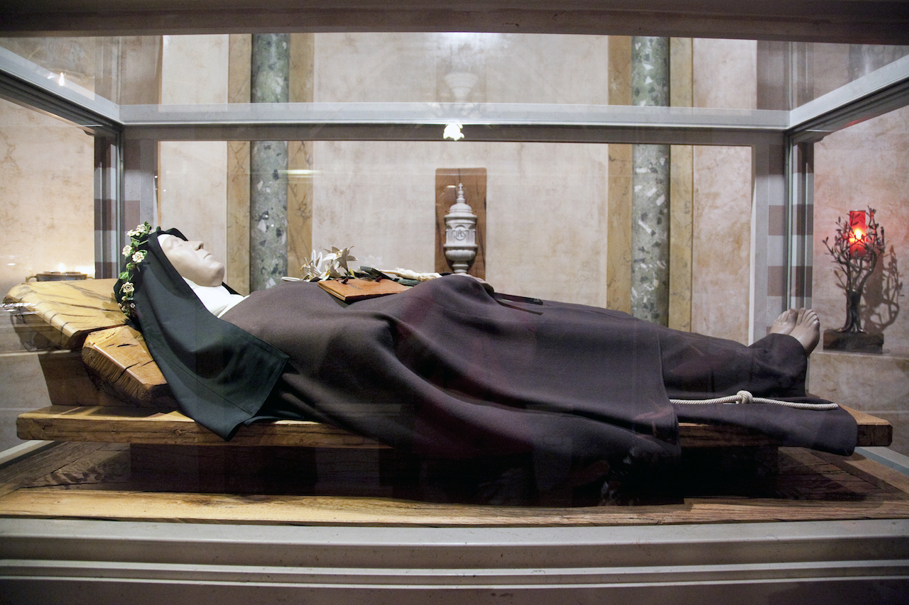

Monasterio de Santa Clara de Elche
Viviendo el carisma de Santa Clara de Asís en Elche desde 1516
Santa Clara de Asís nació en 1193 en una familia noble. Desde joven mostró un corazón orientado hacia Dios. El encuentro con San Francisco marcó profundamente su camino espiritual.
La noche del Domingo de Ramos de 1212, Clara abandonó su hogar y consagró su vida al Señor. Francisco le impuso el hábito y la acogió en la Porciúncula. Así nació la Orden de las Hermanas Pobres.
Desde San Damián, Clara vivió en radical pobreza, oración y contemplación. Su vida estuvo marcada por una profunda relación con Jesucristo y una inmensa devoción al Santísimo Sacramento.
En su enfermedad, Clara vivió experiencias místicas. Se le atribuye la visión de la misa desde su lecho, motivo por el cual fue nombrada patrona de la televisión.
Clara escribió la primera regla femenina aprobada por la Iglesia. Murió en 1253. Su cuerpo se conserva en Asís, donde es venerada con profunda devoción.
